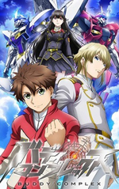
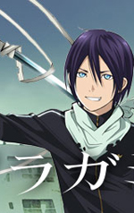
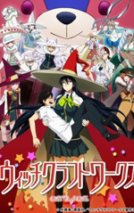
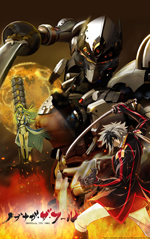
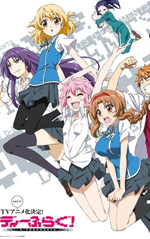
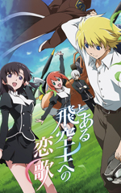
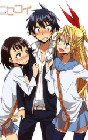
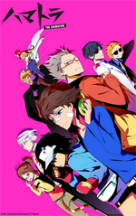
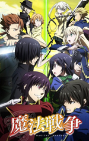

| Name | Cover | Description |
| Seitokai Yakuindomo* | It is the second season to the famous anime, Seitokai Yakuindomo. It is about a boy name Tsuda Takatoshi being one of the few males entering a new co-ed school which was an all girl school before. And everyone assumes he is the worst of all man who has bad hygiene and doesn't treat women properly. But later on, he was approached by the student council and was asked to join. | |
| Buddy Complex |  | Aoba was attacked by a giant robot that appeared out of the sky. He pursued it through the city, his classmate Hina appears in a robot of her own. He is rescued by her and tells him that somebody is waiting for him before she dissapears. This begins Aoba's new life as the pilot of the Free Treaty Alliance against the Great Zogira Republic. |
| Noragami |  | Yato, a minor god, dreams to become the most revered deity in the world with a big shrine. He has a long way to go since he is a penniless god. Later, a high school girl named Hiyori Iki saves him from being hit by a speeding bus. Things gets complicated because that incident causes abnormality in Hiyori's soul, causing her to make an Astral Projection whenever she becomes unconscious. To turn her back to normal, Hiyori must help Yato become a better god who can fix the problem. |
| Witch Craft Works |  | Takamiya Honoka is a regular student whose problem is sitting next to the number one beauty, Ayaka Kagari, in school. If they start interaction her fanclub would beat him. When he is on the brink of death, Kagari comes to save him. The only weird part is, she was dressed as a witch and flying a broom. It is her mission to protect him from danger. |
| Nobunaga the Fool |  | Once upon time, the two sides, The Western Planet and the Eastern Planet, were bound by the "Dragon Pulse" spanning the heavens. The two sides now are in endless battles. Sacred Treasures are used to revolutionize the world order, but no one knows about them but "a heretical girl". Jeanne Kaguya d'Arc sees heavenly visions of the birth of a "Star Messiah" who will save the world. She embarks on a journey with Leonardo da Vinci to find the Star Messiah who turns out to be Oda Nobunaga, the greatest fool of the day in the Eastern World. |
| D-Frag! |  | Kazama Kenji thinks he is a delinquent and almost everyone seems to agree with him. His gang consist of 4-not so normal girls. Reputation has nothing compared to their behavior. |
| Toaru Hikuushi e no Koiuta (The Pilot's Love Song) |  | It is a story of a prince who loses everything and goes on a journey with no guarantee of returning to his hometown. With hatred and revenge in his mind, he meets several people who teach him friendship and love. |
| Nisekoi |  | Raku Ichijo made a secret promise with his childhood sweetheart and kept a pendant as a memento while his love kept the keys. Years later he was forced into a relationship with Chitoge Kirisaki who turned out had a key. Plus two other girls turned out to own keys as well. |
| Hamatora |  | Minimum also known as minor Miracle are special hereditary powers discovered only in an extremely limited number of humans. Those who possess are known as Minimum holder. |
| Mahou Sensou |  | Takeshi Nanase is a high school boy with a dark past. He faked being a couple with his childhood friend, Kurumi Isoshima. One day he meets a girl named Mui Aiba collapsing on his school campus. This change his destiny completely. She is a magician and she apologizes for turning Takeshi into a magician. What Takeshi knew as one world is split into two, one for human the other for magicians. |
©2014 Wan Ahmad Akil Ashraf. Resources